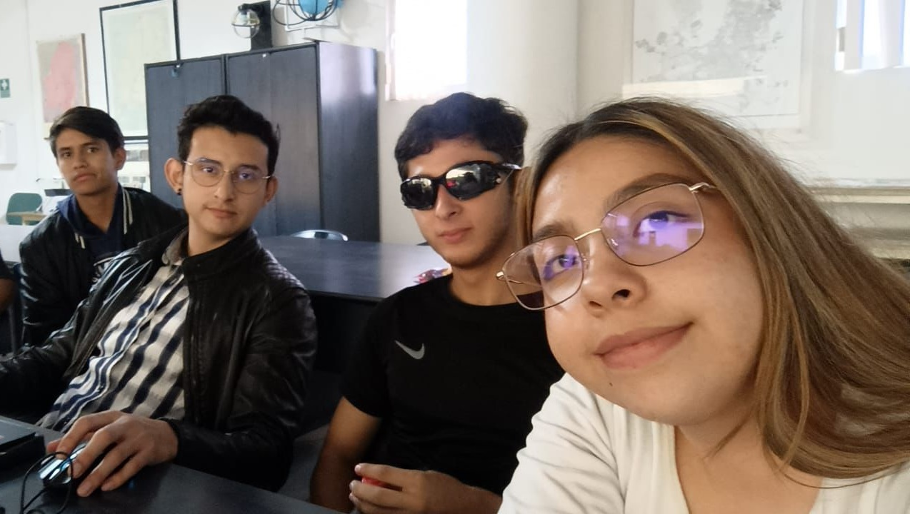

Aún no olvido ese día que dijiste "nací para hacer grandes cosas"

Hay personas que simplemente dejan una marca, incluso sin intentarlo. Tú eres una de ellas. Desde que te conocí en la universidad, entre planos y mediciones, me llamó la atención tu forma de enfocarte, sobre todo la dicotomía entre esa determinación tranquila que te hace diferente y la manera que tienes de dejar en claro que quieres.
Admiro muchísimo la fuerza con la que buscas superarte. Eres una mujer que lo da todo, que no se rinde, que enfrenta lo que venga con una convicción que inspira. Y eso… eso me hace admirarte aún más. Tienes un futuro brillante, eres inteligente, capaz y sobre todo, eres más humana que la persona promedio.
Nunca voy a olvidar aquella tarde que pasamos juntos, tomando café y platicando de todo un poco. En el camión, cuando dijiste “sé que nací para hacer grandes cosas”, sentí algo especial. En ese momento reafirmé que eres alguien que realmente puede lograr todo lo que se proponga. Y esa manera de pensar me ha dejado pensando en la idea de todo lo que podriamos lograr a lo largo de nuestra vida.